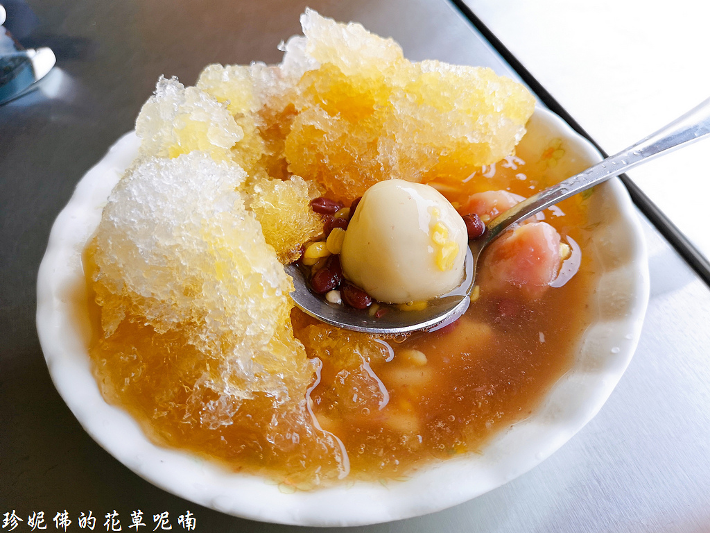
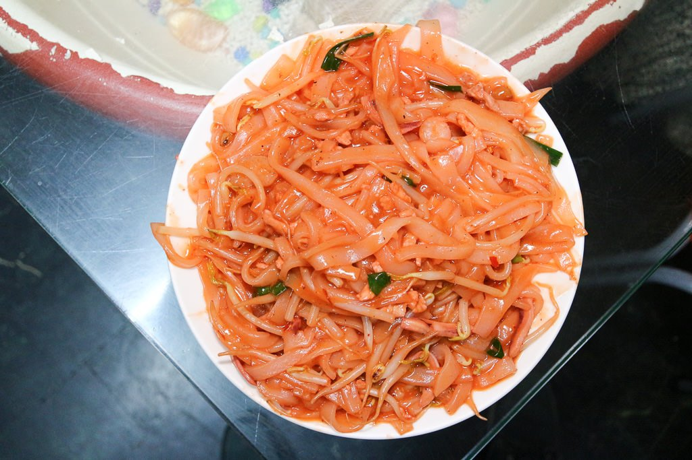

潮州燒冷冰
這是屏東潮州最有名的甜點，裡面的配料有綠豆蒜、湯圓、芋頭、紅豆等等，這些料都是煮滾的，搭配上面的挫冰，冷加熱一起吃是燒冷冰最有特色的地方。而且吃燒冷冰也是有訣竅的，第一步不要攪拌，要從冰的外緣裡面往冰的內餡挖，接下來趕快把湯圓找出來，趁著剛起鍋的湯圓一定要迅速大口咬下，免得躲在冰山裡越多越久，冰太久會讓湯圓開始變硬，口感絕對沒有剛起鍋得好
阿婆炒粄條
這是當地人才知道的美食，位在一個小巷弄裡，價格不貴份量又大，粿仔是用米做成的麵食，大部份都是以在來米製作為主，阿婆家的醬料有加番茄醬與一點豆瓣醬，所以看起來會帶有粉紅色，有的人說它很接近蚵仔煎的醬料。裡加了魷魚、豬肉絲、豆芽菜與蝦仁，一上桌的鑊氣實在是讓人忍不住吞嚥口水
潮州牛大幅
每到假日必高朋滿座，排隊都要排好久才能吃到，這間能吃到牛肉熱炒，還可以吃到正宗沙茶湯頭的火鍋，非常適合外地人來品嘗